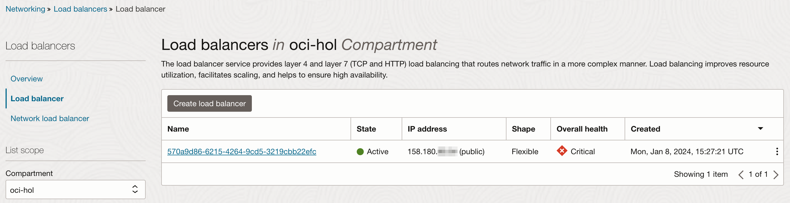
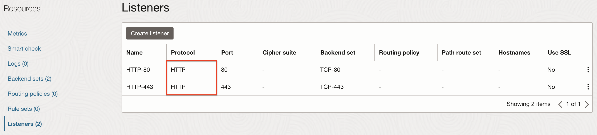
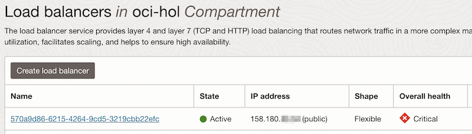
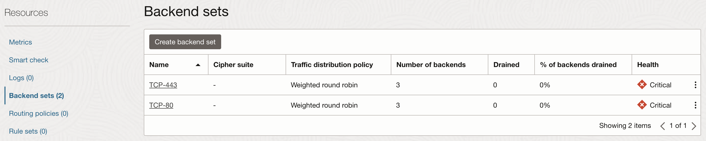
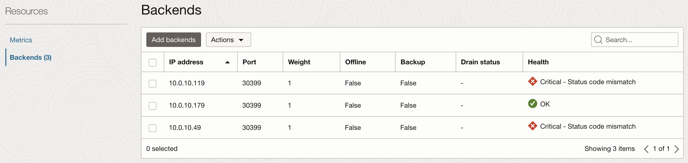

1.2.2.2.1 NGINX Ingress Controller 설치하기
OKE에서 Kubernetes에서 사용가능한 여러가지 오픈 소스 ingress controller를 사용할 수 있습니다. 본 문서에서는 그중에서 가장 많이 사용되며, OKE 문서에서 예제로 설명하고 있는 nginx-ingress-controller를 테스트 해보겠습니다.
-
공식 문서
-
설치 버전
-
2024년 1월 기준, OKE는 Kubernetes 1.25, 1.26, 1.27, 1.28 버전을 제공합니다.
-
2024년 1월 기준, NGINX Ingress Controller의 지원 버전
- https://github.com/kubernetes/ingress-nginx#support-versions-table
Ingress-NGINX version k8s supported version Alpine Version Nginx Version Helm Chart Version v1.9.5 1.28, 1.27, 1.26, 1.25 3.18.4 1.21.6 4.9.0* v1.9.4 1.28, 1.27, 1.26, 1.25 3.18.4 1.21.6 4.8.3 v1.9.3 1.28, 1.27, 1.26, 1.25 3.18.4 1.21.6 4.8.* v1.9.1 1.28, 1.27, 1.26, 1.25 3.18.4 1.21.6 4.8.* v1.9.0 1.28, 1.27, 1.26, 1.25 3.18.2 1.21.6 4.8.* v1.8.4 1.27, 1.26, 1.25, 1.24 3.18.2 1.21.6 4.7.* v1.8.2 1.27, 1.26, 1.25, 1.24 3.18.2 1.21.6 4.7.* v1.8.1 1.27, 1.26, 1.25, 1.24 3.18.2 1.21.6 4.7.* v1.8.0 1.27, 1.26, 1.25, 1.24 3.18.0 1.21.6 4.7.* v1.7.1 1.27, 1.26, 1.25, 1.24 3.17.2 1.21.6 4.6.* v1.7.0 1.26, 1.25, 1.24 3.17.2 1.21.6 4.6.*
- https://github.com/kubernetes/ingress-nginx#support-versions-table
-
Kubernetes 1.26, 1.27, 1.28 모두를 지원하는 버전 중 가장 최신 버전인 v1.9.5로 설치하겠습니다.
-
NGINX Ingress Controller 설치
-
kubectl 사용이 가능한 Cloud Shell 또는 작업환경에 접속합니다.
-
nginx ingress controller 설치할 파일 deploy.yaml을 다운로드 받습니다.
wget https://raw.githubusercontent.com/kubernetes/ingress-nginx/controller-v1.9.5/deploy/static/provider/cloud/deploy.yaml -
ingress-nginx-controller의 Load Balancer Service 유형에 대한 설정을 annotation으로 추가합니다.
-
oci.oraclecloud.com/load-balancer-type: "lb"을 추가하여 OCI Load Balancer를 사용하고 관련 설정을 추가합니다.... --- apiVersion: v1 kind: Service metadata: labels: ... name: ingress-nginx-controller namespace: ingress-nginx annotations: oci.oraclecloud.com/load-balancer-type: "lb" service.beta.kubernetes.io/oci-load-balancer-shape: "flexible" service.beta.kubernetes.io/oci-load-balancer-shape-flex-min: "10" service.beta.kubernetes.io/oci-load-balancer-shape-flex-max: "10" service.beta.kubernetes.io/oci-load-balancer-backend-protocol: "HTTP" spec: loadBalancerIP: 158.180.xx.xx # Reserved Public IP ... type: LoadBalancer ... -
설정값 설명
항목 값 설명 oci.oraclecloud.com/load-balancer-type"lb"Default: "lb"- OCI Load Balancer 사용
"nlb"- L4을 지원하는 OCI Network Load Balancer, 무료 서비스service.beta.kubernetes.io/oci-load-balancer-shape"flexible"Default: "100Mbps"
flexible 유형을 선택service.beta.kubernetes.io/oci-load-balancer-shape-flex-min"10"flexible 유형인 경우 최소 용량 지정 service.beta.kubernetes.io/oci-load-balancer-shape-flex-max"10"flexible 유형인 경우 최대 용량 지정 service.beta.kubernetes.io/oci-load-balancer-backend-protocol"HTTP"Default: "TCP"
생성되는 OCI Load Balancer의 Listener의 프로토콜을 지정
WAF, WAA 지원을 위해 HTTP으로 지정 -
loadBalancerIP: Reserved Public IP를 사전에 만들어 가지고 있는 경우, 해당 IP를 직접 입력하여, 원하는 IP를 부여합니다.
-
-
다음 명령으로 NGINX Ingress Controller를 설치합니다.
kubectl apply -f deploy.yaml -
설치 확인
ingress-nginx namespace에 아래와 같이 설치된 것을 확인할 수 있습니다.
kubectl get all -n ingress-nginx -
Ingress Controller 서비스의 로드밸런서 IP인 EXTERNAL-IP를 확인합니다.
$ kubectl get svc -n ingress-nginx NAME TYPE CLUSTER-IP EXTERNAL-IP PORT(S) AGE ingress-nginx-controller LoadBalancer 10.96.150.50 158.180.xx.xx 80:30399/TCP,443:31348/TCP 58s ...
생성된 OCI Load Balancer 확인
-
OCI 콘솔에 로그인합니다.
-
좌측 상단 햄버거 메뉴에서 Networking > Load Balancers > Load Balancer로 이동합니다.
-
동일한 Public IP로 생성된 Load Balancer를 확인할 수 있습니다.

-
해당 Load Balancer를 클릭합니다.
-
Listener를 보면 그림과 같이 HTTP 프로토콜로 80, 443 포트로 수신하고 있습니다.

Load Balancer 자원 확인
Worker Node가 둘 이상인 경우, 배포가 성공한 경우에도 OCI 콘솔상에서 Load Balancer의 Health 상태가 Critical로 표시됩니다. 이와 관련된 질문이 많아 아래와 같이 설명합니다. 아래 내용은 버전 업이 되면서, Nginx Ingress Controller의 특정 설정이 변경되면서 발생한 내용입니다.
-
Load Balancer의 UID를 확인합니다.
$ kubectl get svc ingress-nginx-controller -o jsonpath='{.metadata.uid}{"\n"}' -n ingress-nginx 570a9d86-6215-4264-9cd5-3219cbb22efc -
OCI 콘솔에 로그하여, Load Balancer 화면으로 이동합니다.
-
목록중에서 확인한 UID가 이름으로 생성된 Load Balancer가 보일 것입니다. 고정 IP를 할당한 경우, 해당 IP로 찾아도 됩니다.

-
해당 Load Balancer를 클릭하여 상세화면으로 이동합니다.
-
왼쪽 아래 Resource > Backend sets 메뉴로 이동합니다.
-
Backend sets의 상태 또한 Critical 인 걸 볼 수 있습니다.

-
Backend set 중 하나를 클릭합니다. 여기서는 TCP-80을 클릭합니다.
-
설정된 Backends를 확인합니다. 여기서 Backend는 Worker Node들입니다. 노드 하나쪽만 OK 상태이고 나머지는 Critical 상태인 걸 알 수 있습니다.

-
Ingress-nginx pod가 위치한 Worker Node를 조회해 봅니다.
$ kubectl get pod -n ingress-nginx -o wide NAME READY STATUS RESTARTS AGE IP NODE NOMINATED NODE READINESS GATES ingress-nginx-admission-create-qkqqs 0/1 Completed 0 21m 10.0.10.81 10.0.10.179 <none> <none> ingress-nginx-admission-patch-9t587 0/1 Completed 0 21m 10.0.10.230 10.0.10.179 <none> <none> ingress-nginx-controller-5d974c544-hrpzn 1/1 Running 0 21m 10.0.10.100 10.0.10.179 <none> <none> -
실제 Pod가 위치한 Worker Node(10.0.10.179)만 Health가 OK 상태입니다. 배포한 NGINX Ingress Controller의 deploy.yaml 파일에 다음 설정의 영향입니다. 해당 설정은 Ingress Controller에 접속하는 클라이언트의 IP를 애플리케이션 Pod에서도 동일하게 클라이언트 IP로 유지하도록 합니다. 애플리케이션 Pod에서 로그 등에서 클라이언트를 추적이 필요한 경우 사용됩니다. 아래 Kubernetes 공식 문서의 관련 내용을 참고하세요.
externalTrafficPolicy: Local-
출처 - Kubernetes 공식 문서 - 외부 로드 밸런서 생성하기 > Preserving the client source IP
.spec.externalTrafficPolicy- 이 서비스가 외부 트래픽을 노드-로컬 또는 클러스터-전체 엔드포인트로 라우팅할지 여부를 나타낸다. 두 가지 옵션이 있다.Cluster(기본) 그리고Local.Cluster는 클라이언트 소스 IP를 가리고 다른 노드에 대한 두 번째 홉(hop)을 발생시킬 수 있지만, 전체적인 부하 분산에서 이점이 있다.Local은 클라이언트 소스 IP를 보존하고LoadBalancer와NodePort타입의 서비스에서 두 번째 홉(hop) 발생을 피할 수 있지만, 트래픽 분산이 불균형적인 잠재적인 위험이 있다.
-
이 글은 개인으로서, 개인의 시간을 할애하여 작성된 글입니다. 글의 내용에 오류가 있을 수 있으며, 글 속의 의견은 개인적인 의견입니다.